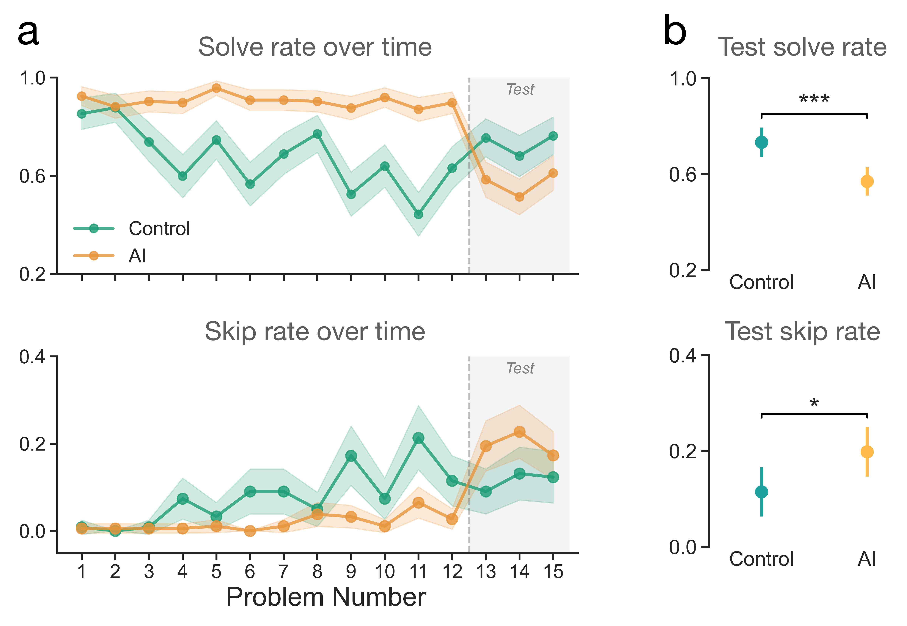
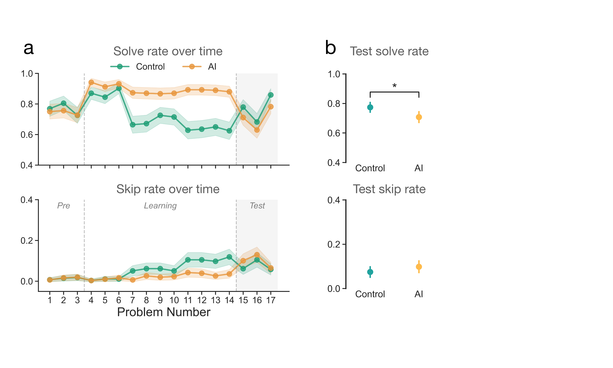
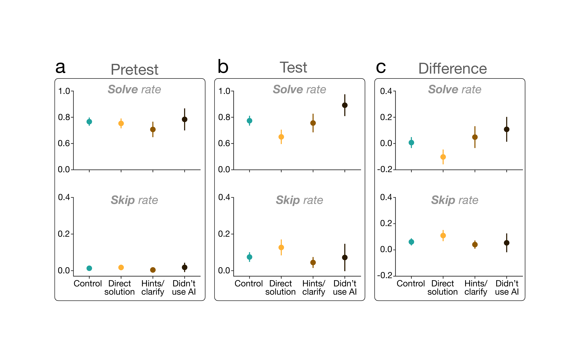
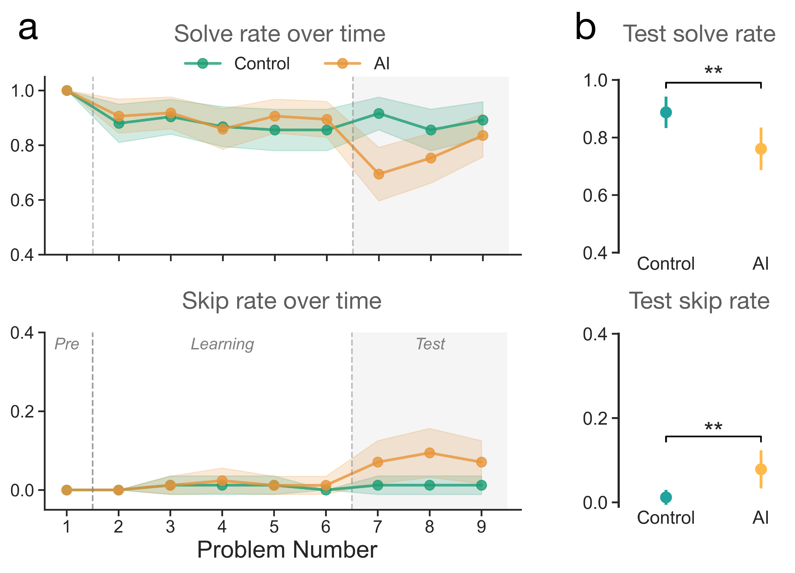

The rapid rise of AI chatbots promises immediate and effective help with reasoning-intensive tasks such as studying, writing, coding, and brainstorming. But what happens to users' own abilities when the AI is not available? In a series of large-scale human experiments, involving arithmetic and reading comprehension, we find that AI assistance improves immediate performance, but it comes at a heavy cognitive cost: after just ∼10 minutes of AI-assisted problem-solving, people who lost access to the AI performed worse and gave up more frequently than those who never used it. These findings raise urgent questions about the cumulative effects of daily AI use on human persistence and reasoning. We caution that if such effects accumulate with sustained AI use, current AI systems — optimized only for short-term helpfulness — risk eroding the very human capabilities they are meant to support.
To investigate the causal impact of AI assistance on subsequent problem-solving capacity, we conducted a large-scale, randomized controlled experiment (N = 354) on fraction-solving tasks. Participants were randomly assigned to an AI condition or a control condition. In the AI condition, participants solved 12 fraction problems with an AI assistant (GPT-5) available in a sidebar. The AI was then removed without warning, and all participants solved 3 additional test problems independently. Participants in the AI condition had a significantly lower solve rate (mean 0.57 vs. 0.73; p < 0.001, Cohen's d = −0.42) and higher skip rate (mean 0.20 vs. 0.11; p = 0.031, Cohen's d = 0.25) than control participants.

AI impairs unassisted performance and persistence. (a) Participants' mean solve rate and skip rate per problem in the order presented, with 95% confidence intervals (CIs). Dashed gray lines denote the transition between learning and test problems. Problem difficulty increased across the experiment from one-step (problems 1–4) to two-step (problems 5–8) to three-step (problems 9–12). (b) Participants' mean test solve rate and skip rate with 95% CIs across participants. Test metrics are computed by averaging performance over the final three test problems for each participant.
Experiment 2 replicated our findings (N = 667) with two key methodological improvements: (1) a pretest phase for ability-based exclusions to address potential skill-level confounds from Experiment 1, and (2) a matched sidebar interface for control participants to eliminate interface asymmetry. Despite these controls, we replicated the core effects: AI assistance improved performance during the learning phase but impaired independent performance at test. Participants in the AI condition had a significantly lower solve rate (mean 0.71 vs. 0.77; p = 0.020, Cohen's d = −0.19) than control participants.

Replication of results in Experiment 2. (a) Participants' mean solve rate and skip rate per problem in the order presented with 95% CIs. Problems increased in difficulty from one-step (problems 4–6) to two-step (problems 7–10) to three-step (problems 11–14) problems. (b) Participants' mean test solve rate and test skip rate with 95% CIs.
Analyzing self-reported AI usage patterns, we find that the majority of participants (61%) used AI to get answers directly. These participants showed the largest declines in performance and persistence — not only compared to control participants but also compared to participants who used AI for hints or clarifications. Participants who used AI for hints showed no significant impairments relative to control.

Performance and persistence declines are concentrated among participants who obtained direct solutions from AI. (a) AI usage groups show no significant differences in solve rate or skip rate at pretest (one-way ANOVA), suggesting comparable initial skill and motivation levels. (b) Groups differ significantly at test (one-way ANOVA): participants who used AI for direct answers show the lowest solve rate and highest skip rate at test-time. (c) Participants who used AI for direct answers show decline in performance (solve rate) and increased disengagement (skip rate) relative to their own pretest performance. Other groups show similar or improved performance relative to their pretest performance.
To test whether effects generalize beyond arithmetic, we replicated our design in a reading comprehension task using SAT-style problems (N = 201). Reading comprehension draws on fundamentally different cognitive skills — meaning-making and mental model construction — allowing us to assess the generality of the AI-assistance effect. Replicating Experiments 1 and 2, participants in the AI condition had a significantly lower solve rate (mean 0.76 vs. 0.89; p = 0.007, Cohen's d = −0.42) and higher skip rate (mean 0.08 vs. 0.01; p = 0.008, Cohen's d = 0.42) than control participants.

Reduced performance and persistence in reading comprehension task. (a) Participants' mean solve rate and skip rate per problem in the order presented with 95% CI. Dashed gray lines denote transition between learning problems and test problems. (b) Participants' mean test solve rate and test skip rate with 95% CIs computed across the participants.